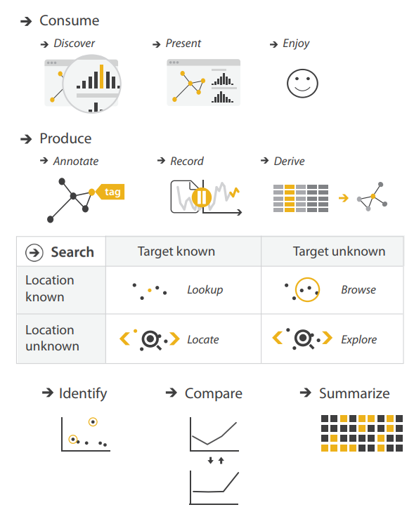
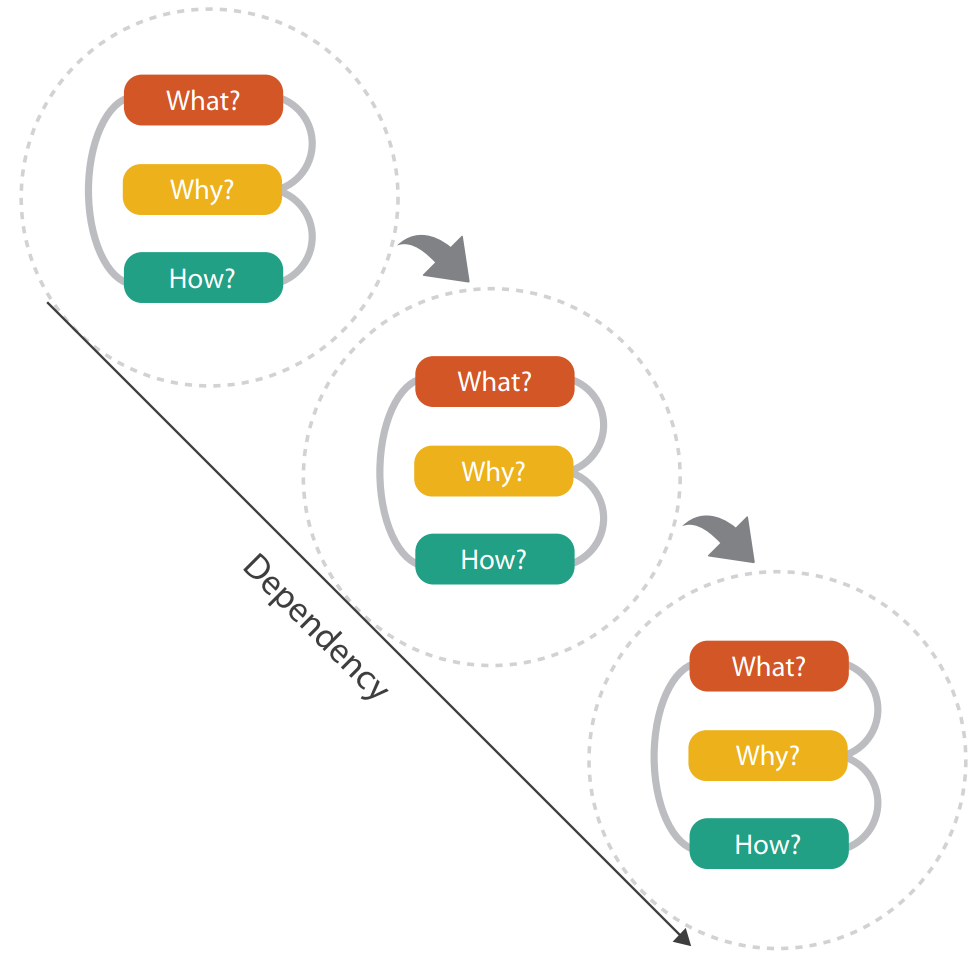
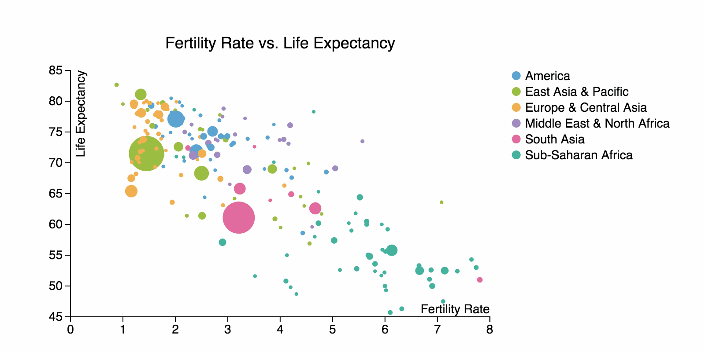
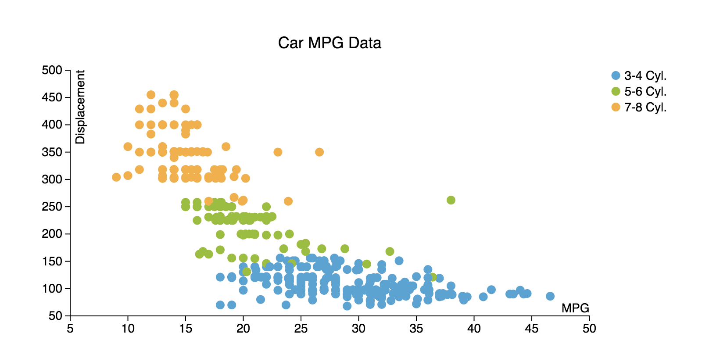

Considerations for Interactive & Expressive Information Design Tools
Matthew Brehmer · EPIC Research Group, Microsoft Research · @mattbrehmer
Presentation at Autodesk Research 2019-02-26 · slides: mattbrehmer.github.io#talks
Good morning. Thank you for the introduction and for the invitation to visit.
Outline
· My background and methodsTimeline Storyteller ChartAccent, Charticulator, & DataToon
Here's a brief outline of what I'll be covering in my talk.
EPIC : Extended Perception, Interaction & Cognition
For context, I'm a member of the EPIC research group at Microsoft Research,
My Background
2011 - 2016 : PhD Computer Science specializing in Information Visualization, UBC
2009 - 2011 : MSc Computer Science specializing in Human-Computer Interaction, UBC
2004 - 2009 : Bachelor of Computing specializing in Cognitive Science, Queen's Univ.
With regards to my background,
Scope of My Research
Considerations and tools for expressive information design :
Timeline Storyteller (C+J 19) | DataToon (CHI 19) | Charticulator (TVCG 19) | ChartAccent (PVIS 17) | Timelines Revisited (TVCG 17) | TimeLineCurator (TVCG 16) Visualization task analysis :
A Typology of Abstract Visualization Tasks (TVCG 13) | Visualizing Dimensionally-Reduced Data (BELIV 14) Empirical evaluation :
Data-Driven Stories (DDS 18) | Visualization Authoring Systems (BELIV 18) | Variants of Multi-Series Bar Charts (CHI 18) |
Overview: A Document Mining Tool for Journalists (TVCG 14) | Pre-Design Empiricism for Visualization (BELIV 14) Visualization for mobile devices :
Ranges Over Time (TVCG 19) | Animation vs. Small Multiples (in prep.) | Novel Interactions with Time-Varying Data (in prep.) Visualization for resource conservation :
Workflows for Energy Portfolio Analysis (TVCG 16)
The research from my PhD and PostDoc spans several cross-cutting themes,
Scope of My Research
Considerations and tools for expressive information design :
Timeline Storyteller (C+J 19) | DataToon (CHI 19) | Charticulator (TVCG 19) | ChartAccent (PVIS 17) | Timelines Revisited (TVCG 17) | TimeLineCurator (TVCG 16) Visualization task analysis :
A Typology of Abstract Visualization Tasks (TVCG 13) | Visualizing Dimensionally-Reduced Data (BELIV 14) Empirical evaluation :
Data-Driven Stories (DDS 18) | Visualization Authoring Systems (BELIV 18) | Variants of Multi-Series Bar Charts (CHI 18) |
Overview: A Document Mining Tool for Journalists (TVCG 14) | Pre-Design Empiricism for Visualization (BELIV 14) Visualization for mobile devices :
Ranges Over Time (TVCG 19) | Animation vs. Small Multiples (in prep.) | Novel Interactions with Time-Varying Data (in prep.) Visualization for resource conservation :
Workflows for Energy Portfolio Analysis (TVCG 16)
And since I have a finite amount of time,
Design & Research Methods
Design & Implementation :· User interface design | Visualization design & development | Toolkit development
Qualitative Research :· Visualization design studies | Requirements analysis | Retrospective interviews· Chauffeured demos | Content analysis | Post-deployment usage analysis
Quantitative Research :· Laboratory experiments | Crowdsourced experiments | Statistical analysis
In terms of how I do my research,
Democratizing Information Design
How can I enable under-served groups of people to... visualize their data? Produce and present compelling data-driven stories?
beyond those in professional data analysis .
journalists and educators presenting information using business intelligence tools?
With respect to the values and goals that underlie my research,
NOT the use cases that motivate my research.
Connecting Research & Practice
Disseminating visualization research into practice , and vice versa .
adoption of deployed information design tools and research prototypes.
Collecting examples of information design produced by practitioners .
Fostering a dialogue between researchers and practitioners (e.g., OpenVisConf , VisInPractice )*.
* OpenVisConf: openvisconf.com VisInPractice.github.io
Another thing that drives my work is connecting visualization researchers and practitioners.
Expressive Information Design
From the perspective of an information visualization researcher.
Now that I've told you about my background and the context for my work,
Expressive Information Design
· Combining visualization , annotation , and explanation to present information to an audience.
tasks , design choices , and constraints .
assess alternative design choices.
It's is about combining visualization, annotation, and explanation in various ways to present information to an audience,
Presenting Information to the Public
e.g., Hans Rosling's TED presentations about global economic and public health indicators.
Image: Open Knowledge Foundation Deutschland (flickr, cc by).
I'm particularly motivated by the challenge of presenting information to a large public audience.
Presenting Information to the Individual
Image: newkemall (flickr, cc by).
I'm also motivated by the challenges of presenting information to an individual,
Aspects of Expressive Information Design
Thinking systematically about tasks , design choices , and constraints .
Expressive information design, from my perspective, requires thinking systematically about tasks, design choices, and constraints
Thinking Systematically about Tasks
A Multi-Level Typology of Abstract Visualization Tasks Brehmer and Munzner. IEEE Transactions on Visualization and Computer Graphics (InfoVis 2013).

Icons by Eamonn Maguire (cc by) for Munzner's Visualization Analysis & Design (CRC Press, 2014).
A central theme of my PhD research pertained to classifying visualization tasks and to consolidating the vocabulary for visualization tasks into a typology,
Thinking Systematically about Tasks
A Multi-Level Typology of Abstract Visualization Tasks Brehmer and Munzner. IEEE Transactions on Visualization and Computer Graphics (InfoVis 2013).
most cited IEEE InfoVis paper since 2013 , with more than 280 citations*.

* Google Scholar, Jan 2019.Eamonn Maguire (cc by) for Munzner's Visualization Analysis & Design (CRC Press, 2014).
This task typology paper also presents a way to break down tasks and task sequences into elements of why visualization is used, what the inputs and outputs are, and how the task is realized in terms of design choices.
Thinking Systematically about Design Choices
Identifying the dimensions of design spaces that characterize:visually represent data.interact with these representations.highlight and annotate them.combine visual content with textual explanation.
Expressivity also refers to thinking systematically about design choices and design spaces:
Constraints on Expressivity
Constraints imposed by authors , by the audience , or by the context .
Expertise : empowering non-programmers and non-designers.
Resources : enabling expressive information design for those on a deadline.
Literacy : anticipating the visual and data literacy of the audience.
Device : anticipating the audience's viewing experience.
But first I want to mention that expressivity is also bound to constraints, and it is these constraints that I find to be particularly challenging and deserving of research.
<< CLICK >>
One of these constraints is expertise:
<< CLICK >>
Another constraint is about resources:
<< CLICK >>
Yet another constraint is literacy:
<< CLICK >>
And finally there's the device: what if my audience is consuming this information from a mobile device?
Outline
· My background and methods
· Timeline Storyteller ChartAccent, Charticulator, & DataToon
Now that I've set the context for expressive information design,
The Daily Routines of Famous Creative People
Story inspired by infographics by Podio info we trust Daily Rituals: How Artists Work Mason Currey
To illustrate this, I want to tell you a few interesting things about the daily routines of famous creative people.
MAX : What you see here is a set of radial timelines depicting a typical 24 hours in the lives of 26 writers, artists, composers, and other creative types.
NEXT : I had wondered if there was any pattern as to when creative people do their creative work.
NEXT : I had also wondered about the potential relationship between sleep and creativity, so let me focus your attention to these blue arcs.
NEXT : This 24-hour clock metaphoe isn't the best way to convey the number or heterogeneity of activities, so I'm going to transition to a just show you a sequence of activities without any duration, effectively resulting in a radial bar chart.
NEXT : To show who varied the most and least among these people, a linear representation is probably better, where you can see that Darwin has the most varied day of all the people here while Murakami prefers less variation.
NEXT : Finally, I'll restore the duration of events so that you can compare these timelines just by scanning up and down, where you might spot times where some routines appear to be in sync with one another, such as when people work or sleep at the same time.
Expressive Information Design with Timelines
Timeline Storyteller: The Design & Deployment of an Interactive Authoring Tool for Brehmer , Lee, Henry Riche, Tittsworth, Lytvynets, Edge, and White. In Proc. Comp. + Journalism 2019.
timelinestoryteller.com github.com/Microsoft/timelinestoryteller
To present that narrative sequence about creative routines,
Timelines Revisited
Timelines Revisited: A Design Space and Considerations for Expressive Storytelling Brehmer , Lee, Bach, Henry Riche, and Munzner. In IEEE TVCG (presented at InfoVis 2017).
Timelines are visual representations of categorical event sequences.visualization research community has focused on their use in data analysis.practitioners used them for storytelling?
In late 2014, I became fascinated by the potential for expressive information design with timelines,
What Happened When ?
In what sequence did the events occur?
A B A B A B C
Before I continue, it helps to ask the question: ``what's a timeline for?''
A Timeline Design Space
Timelines Revisited: A Design Space and Considerations for Expressive Storytelling Brehmer , Lee, Bach, Henry Riche, and Munzner. In IEEE TVCG (presented at InfoVis 2017).
Representation Scale Layout
It turns out that there are many ways to answer these questions and present timelines, which brings me to my design space.
Timelines Revisited: The Research Process
1 . Collecting and categorizing 145 Sources included: Cartographies of Time Visualization of Time-Oriented Data et al. ), Making Timelines
2 . Validating the dimensions of the design space with 118 263 Sources included: visual.ly , the Kantar Information is Beautiful Awards showcase, massvis.mit.edu .
3 . Implementing points in the design space with 28 e.g., Conflicts, epidemics, lifespans, head of state tenures, news stories, natural disasters, publication records, geological history.
So how did I come up with this design space?
timelinesrevisited.github.io
And this process of categorization and implementation led me to identify a set of viable points in the design space,
Purposeful in terms of their communicative intent, interpretable in terms of which perceptual task the viewer is expected to make, and generalizable across a range of timeline datasets.
Thinking Systematically About Tasks & Design Choices
You can see each of these example designs in detail along with a description of what communicative intent they serve,
Using our Timeline Design Space
So now that I've given you all of these design choices, how do you use them to tell stories or make presentations with timelines?
Expressive Storytelling with Timelines
Timelines Revisited: A Design Space and Considerations for Expressive Storytelling Brehmer , Lee, Bach, Henry Riche, and Munzner. In IEEE TVCG (presented at InfoVis 2017).
timelinesrevisited.github.io alternative representations for time. alternative time scales .chronological or non-chronological narratives.reveal visual elements, selectively highlighting and annotating to direct attention.
In this TVCG paper I make the case that timeline design tools should provide alternative representations of time and alternative time scales.
The Authoring Interface of Timeline Storyteller
Web version imports CSV, JSON, GSheet. Power BI version imports various data formats.Web version exports PNG, SVG, GIF, JSON spec. Power BI version exports PBIX, iFrame.
Timeline Storyteller is the realization of the design space and the considerations for expressive storytelling that we put forward in our TVCG paper
Evaluating Timeline Storyteller
A controlled laboratory study to assess expressivity seemed to be inappropriate .with their own data ?reflect our timeline design space ?
Since its release in mid 2017, I've been thinking about ways to evaluate Timeline Storyteller and to better understand how people are using it.
Promoting Timeline Storyteller to Practitioners
Demos / talks at the Tapestry Conference OpenVisConf Dublin Data Summit Data Journalism Team Future of Storytelling Summit Power BI Blog Power BI YouTube channel Data Insights Summit
Now in order to study how people use a deployed tool, you need to promote it to practitioners,
Timeline Storyteller: Collecting Usage Data
Exported content from the web version in mid 2017.Storytelling Contest Microsoft Data Journalism Team Download metrics of the Power BI desktop version:
36,000 downloads of the Power BI version as of January 2019.
Following the promotional effort, I set about collecting data on how people were using Timeline Storyteller.
Timeline Storyteller: Content Analysis
223 unique items of exported content from the web version (subject to author consent).Linear representation and Chronological time scale were most common.
I saved copies of content exported from the web version of Timeline Storyteller over the course of about 9 months, subject to the approval of content authors.
Timeline Storyteller: Content Analysis (cont.)
Example entries from the Power BI user community data storytelling contest
Tropical Cyclones TV Network Ratings
With regards to the storytelling contest,
Timeline Storyteller: Conclusions & Opportunities
No prior interactive tools for presenting expressive timeline narratives .
multiple visual representation choices .
reveal + transform ; selectively highlight + annotate ; applicable to other data types.
Recommend design choices and annotations based on properties of the dataset.
In summary, Timeline Storyteller fills a gap in that no existing tool allows a non-programmer to present a visually expressive timeline narrative.
Outline
· My background and methodsTimeline Storyteller
· Other recent tools: ChartAccent, Charticulator, & DataToon
Now I'll step back to mention that Timeline Storyteller is just one of the expressive information design tool research projects that I've contributed to over the past couple of years, with PhD interns leading their development.
Other Expressive Information Design Tools (1 of 3)
ChartAccent: Annotation for Data-Driven Storytelling Brehmer , Lee, Hllerer, and Choe. In Proc. 2017 IEEE PacificVis Symp.


chartaccent.github.io github.com/chartaccent
One of these is ChartAccent, a project led by Donghao Ren from UCSB, which is an open-source interactive tool for annotating charts via direct manipulation,
Other Expressive Information Design Tools (2 of 3)
Charticulator: Interactive Construction of Bespoke Chart Layouts Brehmer . In IEEE TVCG (InfoVis 2018).
Honorable Mention for Best Paper at IEEE InfoVis 2018.Shortlisted for the 2018 Kantar Information is Beautiful Awards charticulator.com github.com/Microsoft/Charticulator
Donghao continued to work with us and he created another tool called Charticulator, a highly expressive interactive tool for designing bespoke charts and exportable chart templates,
Other Expressive Information Design Tools (3 of 3)
DataToon: Drawing Dynamic Network Comics With Pen + Touch Interaction Brehmer , Hinckley, Pahud, Xia, McGuffin, and Pfister. In Proc. CHI 2019.
aka.ms/DataToon
Finally there's DataToon, which will appear at CHI this year, which is a Pen + Touch tool for drawing comics about dynamic network data.
Evaluating Expressive Information Design Tools
Reflecting on the Evaluation of Visualization Authoring Systems Brehmer , and Henry Riche. BELIV 2018 (Evaluation and Beyond - Methodological Approaches for Visualization) .
Lessons from evaluating tools: Timeline Storyteller , ChartAccent , & Charticulator .
post-deployment content analysis and chart reproduction studies .
aka.ms/renbeliv18
The evaluation of Timeline Storyteller and these other expressive information design tools has also allowed me to reflect on the methods for evaluating them.
Beyond Tools: Evaluating Data-Driven Stories
Evaluating Data-Driven Stories & Storytelling Tools Brehmer * (equal contribution), Bolduan, Elmer, and Wiederkehr. Data-Driven Storytelling (CRC Press 2018).
A summary of perspectives , criteria , methods , metrics , and constraints w.r.t. evaluation .
The process of looking at the content produced with Timeline Storyteller and other tools also makes me wonder about
Outline
· My background and methodsTimeline Storyteller ChartAccent, Charticulator, & DataToon
· Opportunities for future research
At this point I'd like to speak about some opportunities that I'd like to pursue in future research.
Expressive Information Design with Pen + Touch Input
Images L to R : narrative diagram by Kurt Vonnegut, "board game"-like timeline by Matthew Lee, timeline by Mark Twain, Vonnegut drawing a narrative, a curve timeline in Timeline Storyteller.
I'm also continuing to do research about expressive information design tools.
Mobile , Responsive , & Expressive Information Design
Data Visualization on Mobile Devices CHI 2018 Workshop organized by: Brehmer , Choe, Isenberg, Langer, and Dachselt.
Visualizing Ranges over Time on Mobile Phones Brehmer , Lee, Isenberg, and Choe. In IEEE TVCG (InfoVis 2018).
A Comparative Evaluation of Animation and Small Multiples Brehmer , Lee, Isenberg, and Choe. Working paper (Feb. 2019).
My other current area of research is visualization design for mobile devices.
Opportunities for Expressive Information Design
Future Research Directions
What I've spoken about today can be situated within a longer-term research agenda in expressive information design.
Opportunities for Expressive Information Design (1/2)
Designing and evaluating inviting and memorable techniques for presenting information .
spatiotemporal data, dynamic networks .
Collecting and assessing design choices from the research and practice communities.
I intend to continue my design and evaluation of inviting and memorable tools and techniques for presenting information,
Opportunities for Expressive Information Design (2/2)
Measuring audience graphicacy * (visual / data / statistical literacy) and identifying ways to boost it.
limited attention span .
Mobile-first and mobile-only information design (and addressing the scarcity of research ).
* Uncertainty, graphicacy, and the power of statistics thefunctionalart.com
Another opportunity for future research pertains to studying audience constraints,
Considerations for Interactive & Expressive Information Design Tools
Matthew Brehmer · EPIC Research Group, Microsoft Research · @mattbrehmer mattbrehmer.github.io#talks
Presentation at Autodesk Research 2019-02-26
With that I'd like to thank you for your attention, though before I take questions,
I'd like to take a moment to acknowledge my current and recent collaborators spanning a number of institutions and countries,
Information Design Choices on Mobile Phones
Visualizing Ranges over Time on Mobile Phones: A Task-Based Crowdsourced Evaluation Brehmer , Lee, Isenberg, and Choe. In IEEE TVCG (InfoVis 2018).
aka.ms/ranges-tvcg
The specific project that I'll focus on now is one that I presented a few months ago at VIS,
Information Design Choices on Mobile Phones (Cont.)
A Comparative Evaluation of Animation and Small Multiples Brehmer , Lee, Isenberg, and Choe. Working paper, Feb. 2019.
aka.ms/multiples
First, I've continued my crowdsourced experimental research and made use of the same experimental application framework and protocol from the ranges work,
Expressive Info. Design for Mobile Devices: Ongoing
Discoverable Interactions for Navigating & Selecting Time-Varying Data on Mobile Phones Brehmer , Lee, Collins, and Hinckley.
Motivation : few people interact with interactive news graphics beyond scrolling.
using a mobile device .
too much screen real estate .
Meanwhile, I've also been developing novel techniques for interacting with representations of time-varying data on mobile phones.


 Tropical Cyclones by Manga Solutions.
| TV Network Ratings by Pragmatic Works.
Tropical Cyclones by Manga Solutions.
| TV Network Ratings by Pragmatic Works.

 chartaccent.github.io | github.com/chartaccent
chartaccent.github.io | github.com/chartaccent
 Honorable Mention for Best Paper at IEEE InfoVis 2018.
Honorable Mention for Best Paper at IEEE InfoVis 2018. aka.ms/DataToon
aka.ms/DataToon
 Lessons from evaluating tools: Timeline Storyteller, ChartAccent, & Charticulator.
Lessons from evaluating tools: Timeline Storyteller, ChartAccent, & Charticulator.
 Images L to R: narrative diagram by Kurt Vonnegut, "board game"-like timeline by Matthew Lee, timeline by Mark Twain, Vonnegut drawing a narrative, a curve timeline in Timeline Storyteller.
Images L to R: narrative diagram by Kurt Vonnegut, "board game"-like timeline by Matthew Lee, timeline by Mark Twain, Vonnegut drawing a narrative, a curve timeline in Timeline Storyteller.


 aka.ms/multiples | (mobile only) experimental app.
aka.ms/multiples | (mobile only) experimental app.